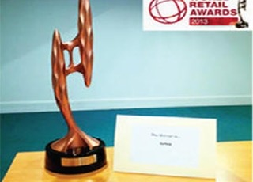

. 2012: African internet group (AIG) launches Jumia
in Nigeria, Morocco, South Africa and Egypt.
. 2014: Jumia introduces Black Friday in Nigeria.
. Jumia launches Jumia force and independent sales
consultant program catering to populations that do not have access to internet.
. 2015: Jumia Black Friday attracts 2.3 million visitors in Nigeria.
. Jumia introduces Jumia Pay a secure payment gateway for people
to shop on all Jumia services.
. 2016: Africa Internet group rebrands as Jumia.
. Jumia becomes Africa's first tech unicorn
. Jumia supports the African tech Ecosystem by powering the MTN
Entrepreneurship Challenge. Pass.ng, MedRX and Vicoba are ranked the three best startups
. 2017: Jumia celebrates its fifth anniversary milestone
. Jumia launches Nigeria's first E-commerce Bot, the Jumia Bot, accessible
on facebook messenger
. Jumia Nigeria organizes a partenership with trace TV, a first of its kind
global live event, the ultimate Music and deals Festival MAD-Fest
Award
. 2013:Jumia Nigeria is the firt African company to win the world
retail Awards
in 2013 with the previous winners including ASOS and Zappos.com
. Leadership ICT company of the year 2013 - jumia (Beacon of ICT Award)
. Success Digest - Innovative business of the year 2013.
. 2015: Jumia Nigeria organizes Customer Service Excellence Awards 2015.
. Orange Academy - Best use of Mobile app - Jumia - App
. 2016: Jumia is ranked among the MIT 50 Smartest Companies globally
. 2017: Jumia is ranked, for the second year in a row, in the MIT
50 Smartest Companies
Brand Journalists Association Awards BJAN (2013)

World Retail Awards 2013
e-Commerce Website of the year (Beacon of ICT Award)
Partner with us:
Become an Affiliation Partner,
Become a sales Consultant, Sell on jumia.